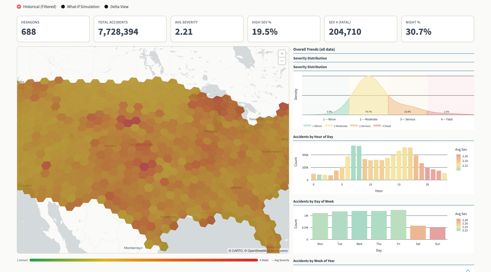
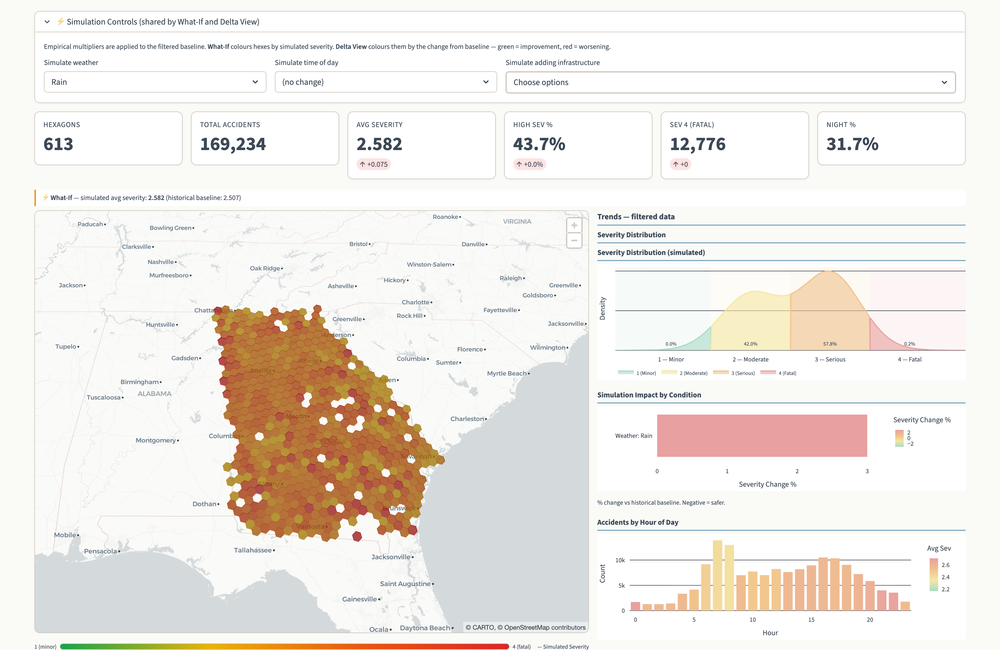
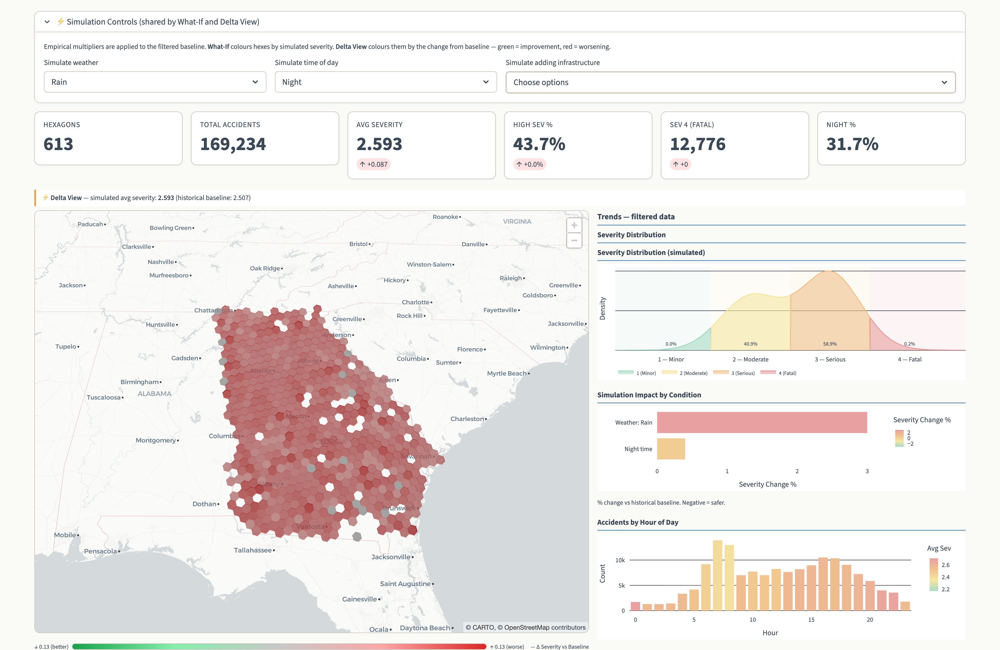
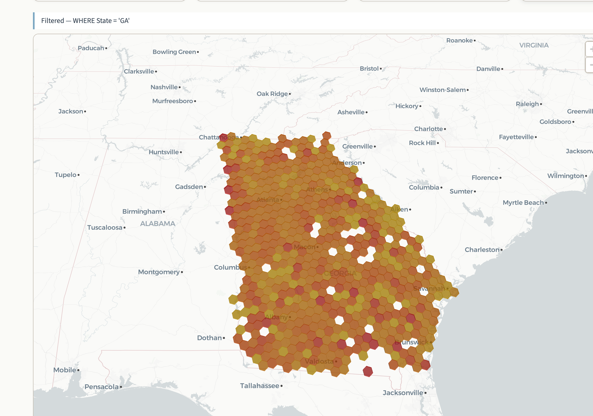
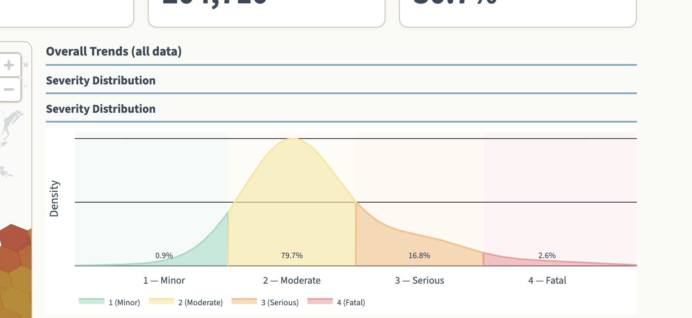
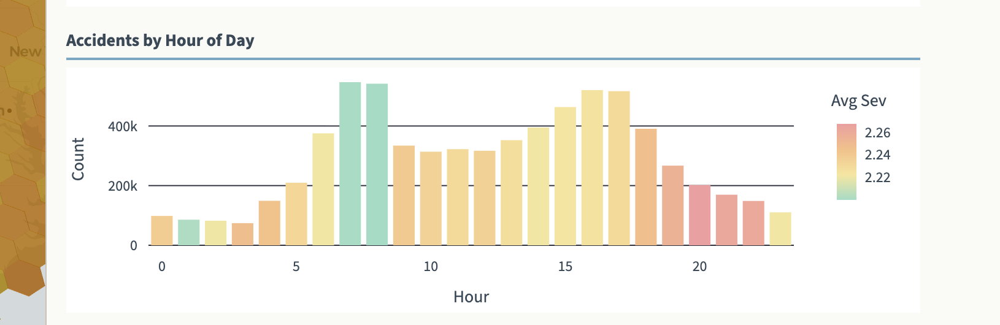
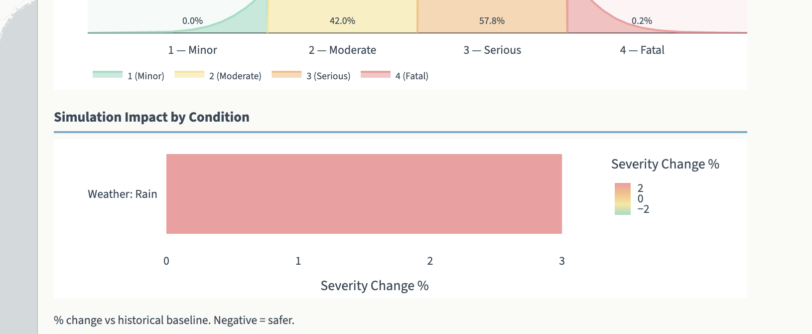
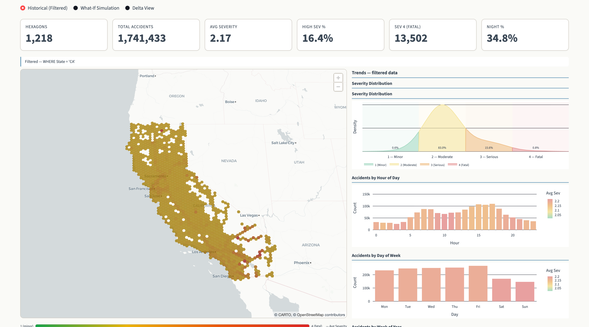

1. Motivation
Road traffic accidents kill 1.35 million people annually and are the leading cause of death for ages 5–29 globally. Existing road safety processes remain reactive—analyzing accidents only after they occur.
Why should we care?
Transportation planners and safety agencies lack tools to explore what would happen if conditions changed. Our project fills this gap with an interactive simulator that lets stakeholders proactively identify high-risk areas and test interventions before deploying resources.
Key Questions
- How does weather (rain, storms) shift accident severity across regions?
- Do infrastructure features (signals, stop signs) measurably reduce severity?
- Where would interventions have the greatest impact, and can we explore this in real time?
2. Data
Source
US Accidents dataset by Moosavi et al. [1], downloaded from Kaggle. Integrates weather data and points of interest across 49 US states, 2016–2023.
Key Features
Severity (1–4), hour/day/week, weather condition, visibility, wind speed, temperature, distance, and infrastructure booleans (junction, traffic signal, crossing, stop sign, station).
3. Tech Stack
Pipeline
7.7M rows
+ H3 Index
Aggregation
Queries
Dashboard
Data is processed in 500K-row chunks, aggregated into Parquet files (a few MB each), enabling the dashboard to reflect the entire dataset without sampling trade-offs. DuckDB provides in-process SQL queries with sub-second response times.
4. Our Approach — Algorithm & Interactive Visualization
What are our approaches?
- H3 Hexagonal Binning: Uber's H3 index at res-3 (national) and res-5 (state drill-down) — the dashboard switches dynamically. Hexagons provide uniform adjacency, eliminating directional bias of square grids.
- LightGBM Severity Prediction: A gradient-boosted decision tree model trained on the full dataset to predict accident severity (1–4) from environmental, temporal, and infrastructure features.
- Empirical Severity Multipliers: Per-feature ratios of mean severity (feature present vs. absent) power the What-If simulator, allowing real-time scenario exploration without re-running the model.
What is new in our approach?
- Real-Time Counterfactual Simulation without Model Inference: Pre-computed empirical multipliers enable instant what-if exploration across all 688 hex cells simultaneously — live model inference at that scale would be computationally impractical.
- Spatial Risk Stabilization via H3 + Empirical Bayes: Per-hex severity is shrunk toward the global mean proportional to sample size (B=50), preventing sparse cells from producing misleading risk spikes — a statistical guarantee naive averaging cannot provide.
- Delta-Based Compound Analysis: Users layer a filter condition (e.g., rain) with a what-if intervention (e.g., stop sign) to identify which locations benefit most from that intervention under that scenario — not found in standard risk dashboards.
- Dual-Resolution Dynamic Switching: The map auto-transitions from res-3 (688-cell national view) to res-5 (state-level detail) without additional data loading, matching spatial resolution to the decision at hand.
Why will it work?
- Empirical multipliers are computed from 7.7M real observations, grounding simulations in actual statistical relationships rather than theoretical assumptions.
- H3 binning aggregates noisy point data into meaningful spatial units, reducing visual clutter while preserving geographic patterns.
- LightGBM captures non-linear interactions between features (e.g., rain + night + junction) that traditional logit models cannot model, while still providing interpretable feature importance scores.
- Design follows Andrienko et al.'s [2] geovisual analytics framework: dynamic exploration over static reporting.
5. Interactive Dashboard








6. Experiments & Results
Model Performance (LightGBM)
Trained on 80% of full dataset; evaluated on stratified 20% held-out test set (1.4M records).
| Metric | Value |
|---|---|
| Accuracy | 0.72 |
| F1-Macro (primary) | 0.50 |
| F1-Weighted | 0.76 |
| Cohen's Kappa | 0.44 (moderate) |
| AUC-ROC (macro) | 0.93 |
| AUPRC (macro) | 0.61 |
| MAE | 0.39 severity levels |
F1-Macro weights all 4 classes equally — the key metric for rare fatal incidents. A majority-class baseline would score 0.78 accuracy but near-zero F1-Macro.
Per-Class AUPRC vs. Random Baseline
| Class | AUPRC | vs. Baseline |
|---|---|---|
| Sev 1 Minor (0.9%) | 0.42 | 47× above |
| Sev 2 Moderate (80%) | 0.97 | ~1.2× |
| Sev 3 Serious (17%) | 0.72 | 4.3× |
| Sev 4 Fatal (2.6%) | 0.33 | 13× |
Feature Importance (Top 5)
| Feature | Role |
|---|---|
| Distance (mi) | Strongest predictor |
| H3 Location | Spatial context matters |
| Hour of Day | Night = higher severity |
| Junction | Increases severity |
| Traffic Signal | Decreases severity |
Sensitivity Analysis
| Condition | Multiplier | Severity Shift |
|---|---|---|
| Severe Storm | 1.042 | +4.2% |
| Add Junction | 1.042 | +4.2% |
| Rain | 1.030 | +3.0% |
| Night time | 1.004 | +0.4% |
| Add Stop Sign | 0.937 | −6.3% |
| Add Traffic Signal | 0.936 | −6.5% |
| Add Crossing | 0.925 | −7.5% |
Multipliers from weights.json — validated against established road safety literature.
7. Comparison
vs. Traditional Statistical Models
Savolainen et al. [8] show that logit/probit models assume linearity and treat crashes as independent events. Our LightGBM model captures non-linear interactions and spatial dependence via H3 features.
vs. Neural Networks
Abdelwahab & Abdel-Aty [9] achieve high accuracy with ANNs but sacrifice interpretability. LightGBM provides built-in feature importances without needing post-hoc explanation methods.
vs. Existing Dashboards
Traditional traffic dashboards are descriptive (showing past data) and confined to single regions. Our tool is prescriptive (what-if simulation) and covers all 49 states at once.
vs. Castellani et al. [10]
Their work uses SHAP values for post-hoc interpretation on Ohio data. We use LightGBM's native importances for lower computational cost and add a real-time interactive simulator on top.
| Capability | Logit | ANN | Ours |
|---|---|---|---|
| Non-linear interactions | ✗ | ✓ | ✓ |
| Interpretable | ✓ | ✗ | ✓ |
| What-If simulation | ✗ | ✗ | ✓ |
| Nationwide (49 states) | ✗ | ✗ | ✓ |
| Real-time interactive | ✗ | ✗ | ✓ |
8. Conclusions & Future Work
Key Takeaways
- We built an end-to-end pipeline from 7.7M raw accident records to an interactive geospatial dashboard with real-time What-If simulation.
- H3 hexagonal binning + empirical multipliers enable instant scenario exploration without re-running expensive models.
- The Delta View uniquely visualizes intervention impact, showing exactly which areas benefit most from proposed changes.
- Feature importance analysis confirms that infrastructure features (signals, stop signs) measurably reduce severity, supporting evidence-based infrastructure investment.
Limitations
- Severity 2 dominance (~80% of records) limits minority-class prediction accuracy.
- What-If multipliers are empirical averages; a causal model would provide stronger policy recommendations.
- Reporting bias in the source data: minor accidents are under-reported in some states.
Future Work
- Integrate real-time traffic feeds for live severity predictions.
- Add user study evaluation with transportation planners to validate utility.
- Extend to county-level policy recommendations with cost-benefit analysis.
- Explore causal inference methods (e.g., propensity scoring) for stronger intervention claims.
References
[1] Ahmed et al., "Road traffic accidental injuries and deaths: A neglected global health issue," Health Science Reports, 2023.
[2] Andrienko et al., "Geovisual analytics for spatial decision support," Int. J. Geographical Info. Sci., 2007.
[3] Moosavi et al., "A Countrywide Traffic Accident Dataset," arXiv, 2019.
[4] Fisa et al., "Effects of interventions for preventing road traffic crashes," BMC Public Health, 2022.
[5] Federal Highway Administration, "Safety evaluation of red-light cameras," FHWA-HRT-05-048, 2005.
[6] Federal Highway Administration, "Data driven safety analysis — New Jersey roundabouts."
[7] Ghasemi et al., "Roadway infrastructure factors affecting road accidents using interpretable ML," 2025.
[8] Savolainen et al., "Statistical analysis of highway crash-injury severities," Accident Analysis & Prevention, 2011.
[9] Abdelwahab & Abdel-Aty, "ANN models to predict driver injury severity," Transportation Research Record, 2001.
[10] Castellani et al., "Predicting traffic crash severity through feature selection," Safety Science, 2025.
[11] Hauer et al., "Estimating safety by the Empirical Bayes method," Transportation Research Record, 2002.
[12] Park et al., "Fully Bayesian multivariate before–after evaluation," Accident Analysis & Prevention, 2010.
[13] Uber Technologies, "H3 Documentation," h3geo.org, 2026.
[14] Ziakopoulos et al., "A review of spatial approaches in road safety," Accident Analysis & Prevention, 2020.
[15] Goel et al., "Effectiveness of road safety interventions: An evidence and gap map," Campbell Systematic Reviews, 2024.